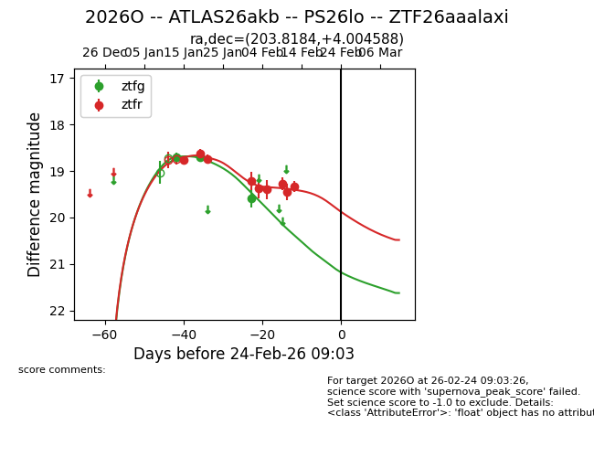
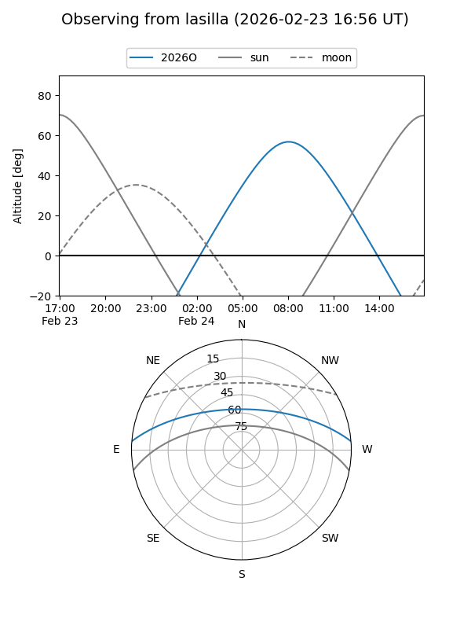
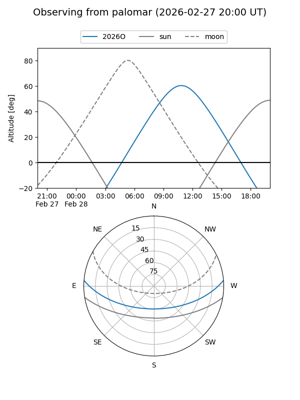
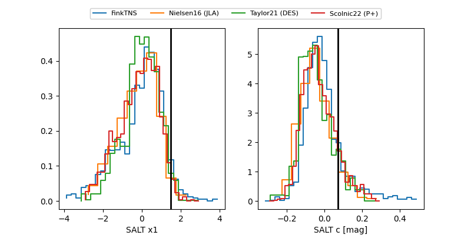

2026O
Target 2026O at 2026-01-25 09:26
Aliases and brokers:
FINK: link
Lasair: link
ALeRCE: link
TNS: link
YSE: link
alt names
ZTF26aaalaxi (ztf,fink_ztf)
2026O (tns,yse)
ATLAS26akb (atlas)
PS26lo (panstarrs)
Coordinates:
equatorial (ra, dec) = 203.8184,+4.00459
equatorial (HMS+DMS) = 13:35:16.41,+04:00:16.52
galactic (l, b) = (329.1897,+64.61787)
Flags:
Photometry:
last ztfg=18.71, ztfr=18.73
2 ztfg, 3 ztfr detections
Lightcurve

Visibility


Additional plots
